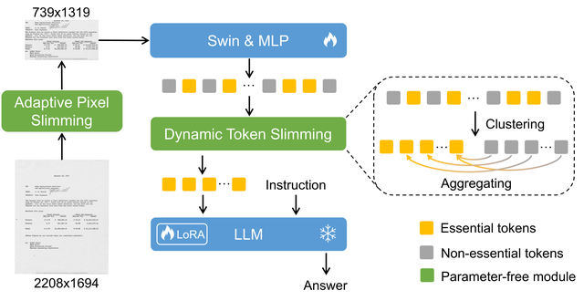
Selected first-author work.

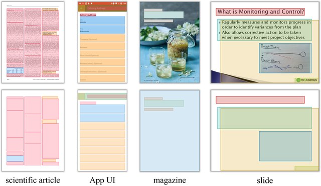
International Journal of Computer Vision, 133(7), 3891–3917, 2025
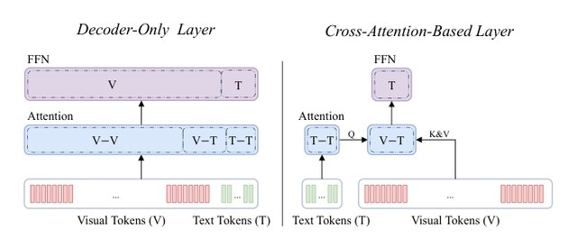
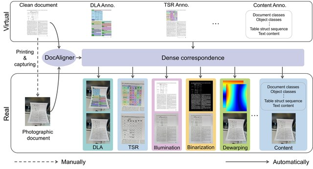
Pattern Recognition, 2026
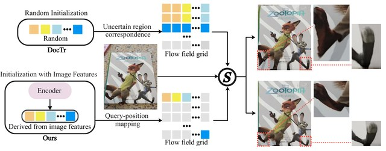
ACM Transactions on Graphics, 46(2), 1–16, 2026
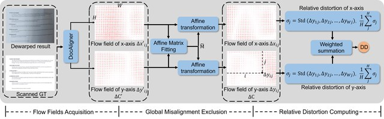
Pattern Recognition Letters, 195, 51–58, 2025
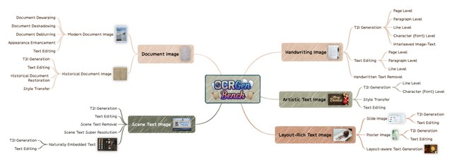
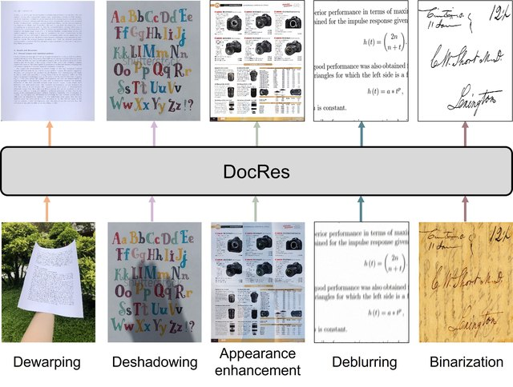
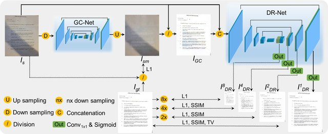
IEEE Transactions on Artificial Intelligence, 5(5), 2319–2330, 2023
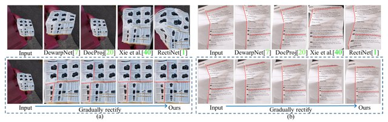
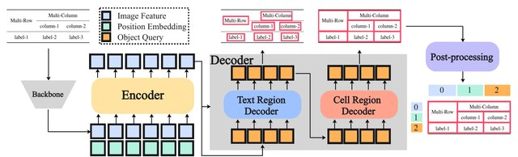
Pattern Recognition, 183, 114832, 2026
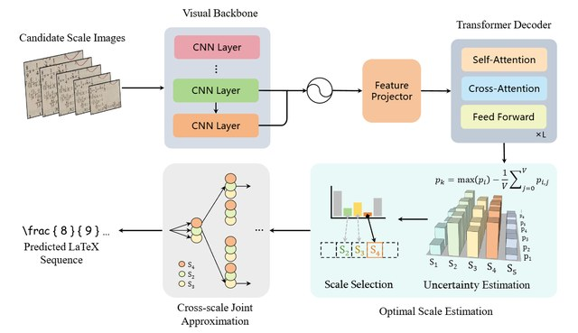
Pattern Recognition, 2026
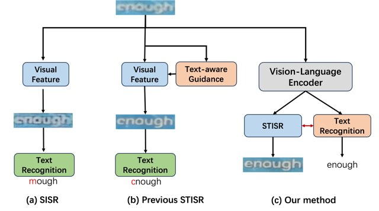
Neurocomputing, 620, 129241, 2025
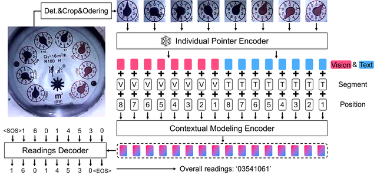
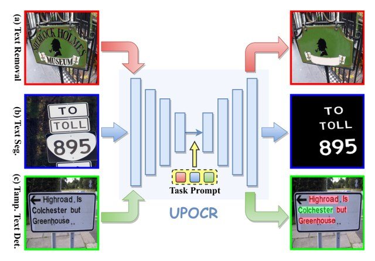
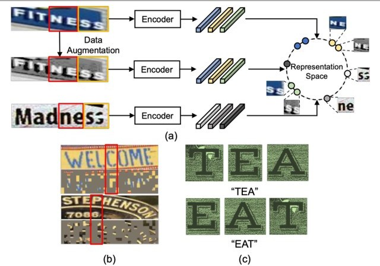
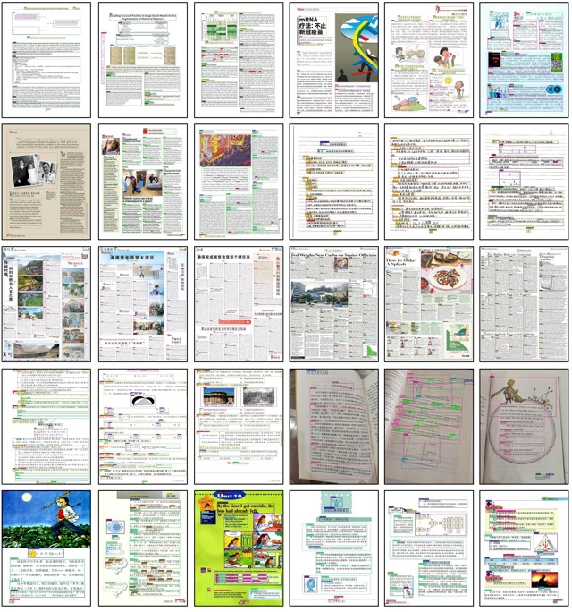
Pattern Recognition Letters, 165, 146–153, 2023
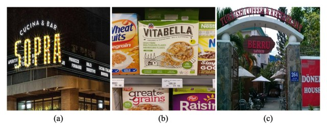
ICPR, 3252–3258, 2022
Neurocomputing, 507, 345–357, 2022